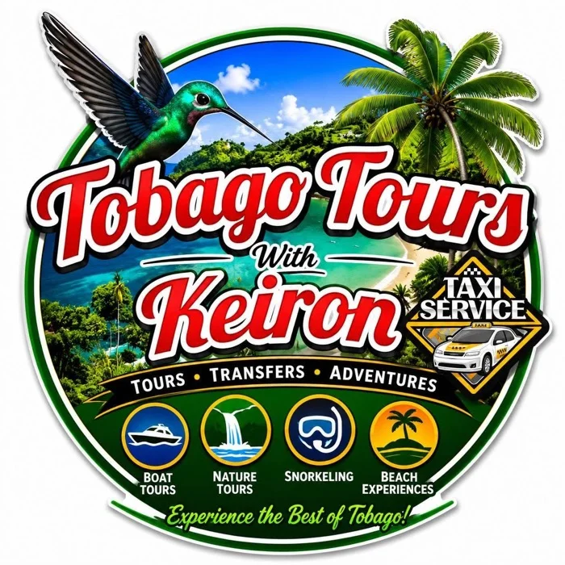
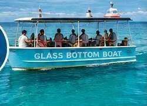
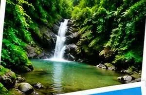
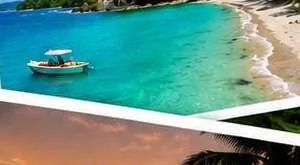
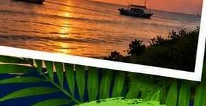
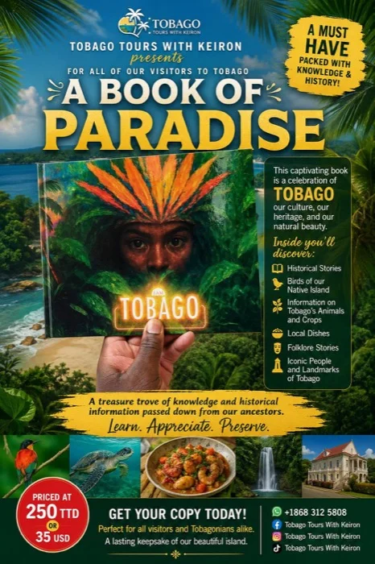

Trusted Partner
Tours, transfers, and adventures across Tobago — from hand-feeding hummingbirds to all-inclusive boat trips to the Nylon Pool. Booked by hundreds of cruise ship visitors, trusted by locals, and personally recommended by Quincy.

Things to Do, Keiron's Way
Pre-book your transfer straight to your hotel or place of stay. Easy, no-brainer, hassle-free.
Nylon Pool, No Man's Land, and Buccoo Reef — with snorkeling. Yes, snorkeling.
The Caribbean side: top beaches, forts, waterfalls, stingrays, and hand-feeding the awaiting hummingbirds.
A hike through the protected rainforest — sacred trees, trap door spiders, and golden waterfalls.
The Atlantic side: forts, Argyle Waterfall, local lunch, the old sugar wheel, Flagstaff Hill, Charlotteville, and Pirates Bay.
Plus airport transfers, taxi service, beach days, and nightlife tours whenever you need them.
Call or WhatsApp KeironBrand New This Season
Board at the Lagoon Jetty and set sail for the Nylon Pool — a place in the world like no other. Spend roughly 90 minutes there before heading to No Man's Land for a BBQ lunch, then explore the lagoon's nature sights on the way back.
Unlimited rum punch made by Keiron himself, plus bottled water and local beers on request.

Taxi to and from your location
Boat fee to Nylon Pool & No Man's Land
Full BBQ lunch
Unlimited rum punch, water & local beers
Pier pickup at 8:30am
Gather family & friends — bring the group
Minimum 10 persons to run this excursion. Call or WhatsApp to check dates and availability.
After Dark
Pick-up from your hotel, guesthouse, villa, or Airbnb, safe transportation all night, and a bar-hopping route built around what you're actually into — live music, popular bars, nightclubs, beach limes, or the island's best party spots. Available for locals and visitors, and welcome for groups, couples, solo travelers, and friends.
Plan a Night OutOn Tour



Also on Tour
Keiron hands a copy of I Am Tobago to visitors himself — a celebration of Tobago's culture, heritage, and natural beauty, packed with folklore, local dishes, and the island's iconic people and landmarks. Ask him for a copy on tour, or grab one before you go.
See the Book
Quincy's Take
I've sent friends and family straight off the cruise ship into Keiron's hands more times than I can count, and every single time they come back grinning about the hummingbirds. He shows up, he does exactly what he says, and cruise visitors with only a few hours ashore never feel rushed or short-changed. If you want Tobago done right — on land or after dark — Keiron's who I call.
Ready to Book?
Pre-booking is available. Call or WhatsApp, or send an email — Keiron handles booking personally.
Follow trip updates and new excursions on Facebook.
Planning More of Tobago?
More trusted local operators, stays, and things to do — all vetted by Quincy.
Explore the Guide